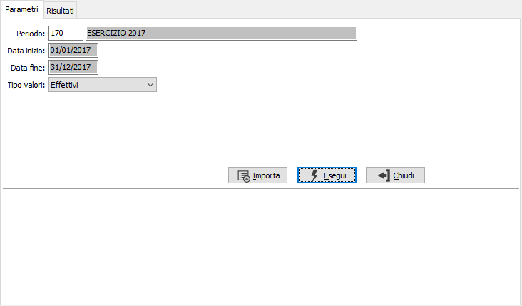
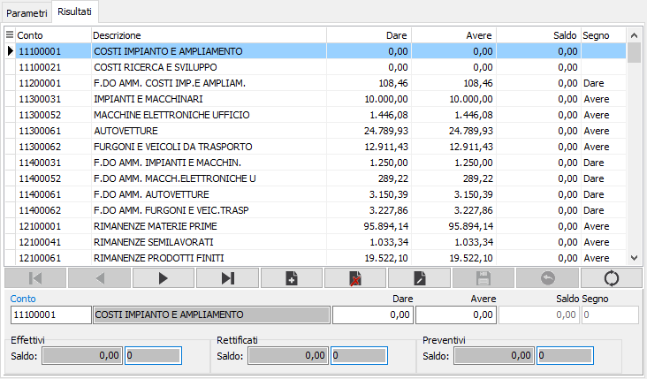

Manutenzione valori
La procedura consente di manutenere i valori nel caso si utilizzi un piano dei conti aziendale.
La pagina dei parametri consente di specificare i criteri relativi alla selezione dei dati da manutenere ed eventualmente all'importazione da un file esterno.

PERIODO: inserire il periodo per cui si desidera effettuare la manutenzione dei valori. L'inserimento del periodo determina la valorizzazione delle date di elaborazione. Sul campo sono attive le funzioni di ricerca (F9) sulla tabella stessa.
VALORI: indicare quali valori si desidera modificare: i valori effettivi, quelli rettificati oppure quelli Preventivi.
La pressione del pulsante Importa consente di indicare un file in formato ASCII da cui è possibile effettuare direttamente la generazione dei valori e dei relativi conti. Nel caso in cui esistano già dei valori per il periodo richiesto nella selezione principale, all'utente sarà richiesto se desidera sovrascrivere i dati oppure annullare l'operazione.
Il formato del file deve essere il seguente:
Prima riga di intestazione e successive righe con i dati nelle seguenti colonne.
FlTipoConto|IdContoTp|IdConto|DsConto|DareMov|AvereMov
FlTipoConto: 1 = attività, 2 = passività, 3 = costi, 4 = ricavi, 5 = conti di servizio, 6 = conti d'ordine attivi, 7 = conti d’ordine passivi.
IdContoTp: SC = sottoconto, CL = cliente, FO = fornitore.
IdConto: codice del conto max lunghezza 8 caratteri.
DsConto: descrizione del conto max lunghezza 50 caratteri.
DareMov: saldo DARE del conto, formato nnnn,ddd ( 1500,25)
AvereMov: saldo AVERE del conto, formato nnnn,ddd ( 1500,25)
La pressione del pulsante Esegui visualizza nella pagina Risultati i dati selezionati.

CONTO: indica il conto del piano dei conti aziendale al quale sono associati i valori. Sul campo sono attive le funzioni di ricerca (F9) e manutenzione (CTRL+W) sulla tabella stessa.
DARE: Importo DARE relativo al tipo di valore selezionato associato al conto.
AVERE: Importo AVERE relativo al tipo di valore selezionato associato al conto.
Il Saldo ed il relativo segno vengono calcolati automaticamente.
La pressione del tasto Salva sulla toolbar principale (F10) effettuerà il salvataggio dei dati modificati, dopo richiesta di conferma; analogamente la pressione del tasto Annulla sulla toolbar principale (ESC) annullerà ogni modifica apportata, sempre dopo una richiesta di conferma.